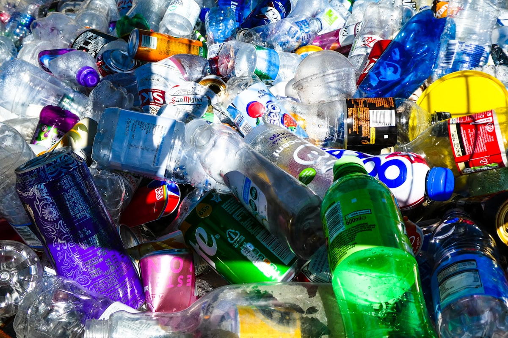
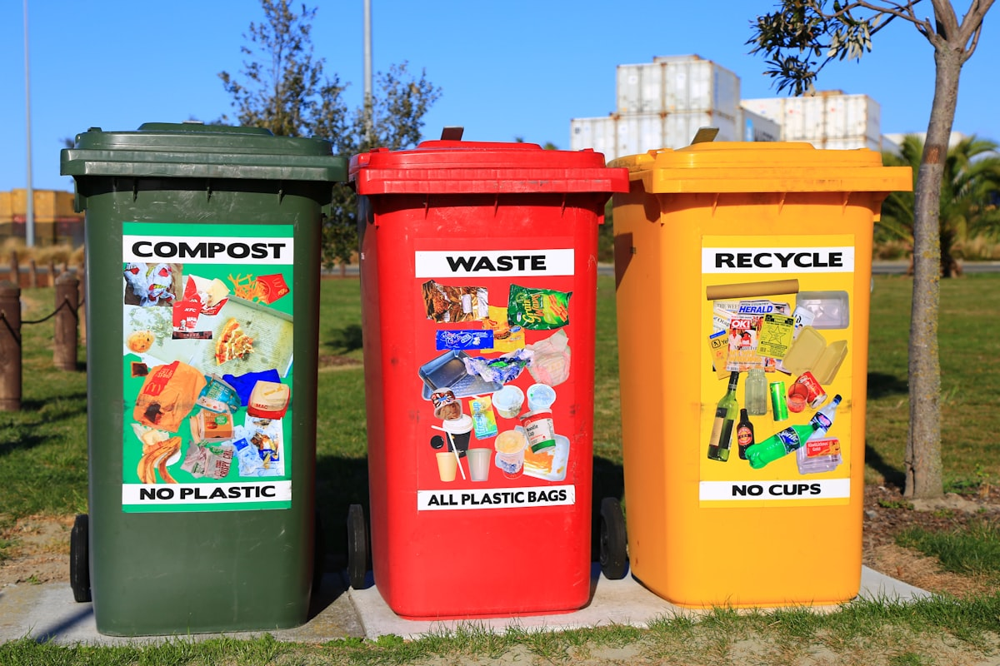
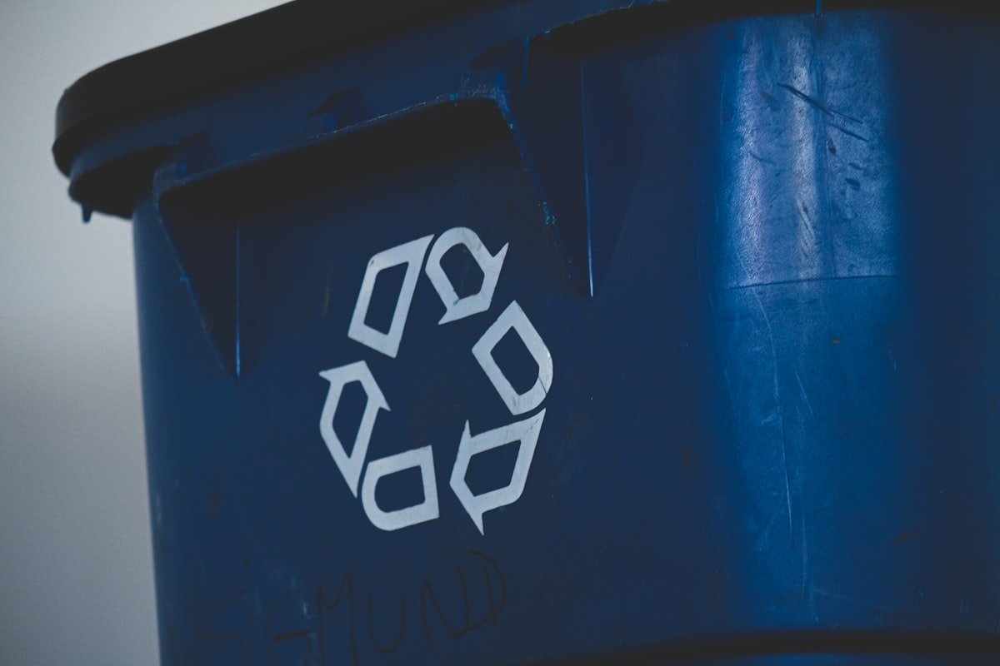

Обов'язковий документ державного планування, що містить узгоджений набір завдань і заходів для сталого управління відходами на території територіальної громади — обов'язковий для кожної громади в Україні.
Регулюється Законом України «Про управління відходами» № 2320-IX · Постановою КМУ № 947 від 5 вересня 2023 року · Методичними рекомендаціями Мінекоенерго, наказ № 288 від 15 березня 2024 року.
Місцевий план управління відходами (МПУВ) — це документ державного планування, що містить узгоджений набір взаємопов'язаних завдань і заходів — погоджених за термінами та ресурсним забезпеченням з усіма відповідальними сторонами — спрямованих на забезпечення сталого управління відходами в межах населених пунктів територіальної громади.
План будується на основі оцінки поточного стану управління відходами в громаді: видів і обсягів утворюваних відходів, наявних місць видалення та їхніх характеристик, діючих підприємств з управління відходами та їхньої технічної спроможності, необхідної додаткової інфраструктури, оцінки витрат та джерел фінансування.
Він враховує принципи міжмуніципальної співпраці між органами місцевого самоврядування та розробляється на основі вже встановлених регіональних моделей. МПУВ є третім з чотирьох рівнів планування в реформованій системі управління відходами в Україні.
Розробляється відповідно до статті 26, частини 2, пункту 1 Закону України «Про управління відходами». Порядок розроблення, схвалення та затвердження встановлено Постановою КМУ № 947 від 5 вересня 2023 року. Методичні рекомендації видані Мінекоенерго 15 березня 2024 року (наказ № 288).

МПУВ входить у структуровану національну ієрархію управління відходами — кожен рівень є обов'язковим для нижчих.
Державний рівень · Довгострокові рамки та цілі узгодження з ЄС
Обласний рівень · Галузеві програми та міжгромадська координація
Рівень громади · Зобов'язання громади та місцева інфраструктура
Рівень об'єкта · Операційне поводження з відходами та дозволи на видалення
МПУВ має бути оновлений протягом 6 місяців з моменту будь-якої зміни відповідного регіонального плану.
Розробляється за участю науковців, експертів, громадськості та підприємств, що працюють на території — план повинен ґрунтуватись на фактичному аналізі місцевих реалій управління відходами.
Розроблений проєкт МПУВ подається до обласної державної адміністрації для схвалення перед остаточним затвердженням радою громади.
МПУВ — це живий управлінський документ із визначеним терміном чинності, обов'язковими циклами перегляду та щорічними зобов'язаннями зі звітності, покладеними законом на кожну раду громади.
Щороку органи місцевого самоврядування зобов'язані звітувати про хід реалізації МПУВ — зокрема про досягнення локалізованих цільових показників, визначених у плані.
Дані моніторингу подаються відповідним державним органам до 1 березня наступного періоду та одночасно публікуються на офіційному сайті громади для публічного доступу.
Невиконання обов'язку щодо розроблення, схвалення чи підтримання МПУВ є порушенням Закону України «Про управління відходами» та наражає керівництво громади на адміністративну відповідальність. Jureco забезпечує повний цикл супроводу та щорічний моніторинг протягом усього 10-річного терміну дії плану.
Кожен місцевий план управління відходами структурується навколо цих базових аналітичних та операційних блоків — кожен ґрунтується на перевірених місцевих даних.
Інвентаризація всіх потоків відходів на території громади — види, обсяги, джерела — та характеристика всіх наявних об'єктів видалення, перевантажувальних станцій та інфраструктури збору.
Оцінка всіх підприємств з управління відходами, що працюють на території: обсяг послуг, технічне обладнання, потужність переробки, географічне покриття та регуляторний статус.
Визначення відсутньої чи недостатньої інфраструктури — лінії сортування, об'єкти компостування, пункти збору — з оцінкою витрат, моделями фінансування та визначенням пріоритетів.
Конкретні заходи щодо будівництва нових об'єктів переробки відходів чи реконструкції наявних, включно з критеріями вибору майданчиків, шляхами отримання дозволів та графіками реалізації.
Виявлення всіх несанкціонованих звалищ на території та поетапний план закриття, технічної рекультивації та моніторингу після закриття відповідно до національних та європейських стандартів.
Системні заходи щодо запобігання несанкціонованому видаленню відходів: інфраструктура моніторингу, протоколи реагування, програми підвищення обізнаності та механізми звернень громади.
«Стале управління відходами не починається біля воріт звалища. Воно починається з плану — такого, що визначає кожен потік відходів, кожен розрив в інфраструктурі та кожен шлях фінансування ще до того, як вирушить перша вантажівка.»Jureco
Інвентаризація на місці видів, обсягів відходів та наявної інфраструктури збору й видалення — включно з морфологічними дослідженнями складу, де це потрібно — для встановлення перевіреної базової лінії плану.
Підготовка повного документа плану відповідно до Постанови КМУ № 947/2023 та наказу Мінекоенерго № 288/2024 — охоплюючи всі шість структурних блоків з перевіреними місцевими даними, цільовими показниками та графіками реалізації.
Організація та документування консультацій з науковцями, галузевими експертами, місцевими підприємствами та громадськістю — відповідно до вимог закону протягом усього процесу розробки.
Підготовка та подання проєкту МПУВ до обласної державної адміністрації для обов'язкового схвалення — з повною координацією відповідей на зауваження та будь-яких необхідних правок.
Постійний моніторинг досягнення цільових показників після затвердження, підготовка щорічних звітів для подання державним органам до 1 березня та публікація результатів на офіційному сайті громади.

Затвердження МПУВ не завершує юридичні зобов'язання громади — воно започатковує 10-річний цикл реалізації, моніторингу та періодичного перегляду, передбачений законом.
Органи місцевого самоврядування повинні відстежувати досягнення локалізованих цільових показників плану та звітувати щороку відповідним державним органам. Результати мають публікуватись на офіційному сайті громади не пізніше 1 березня наступного року.
У разі зміни регіонального плану МПУВ має бути оновлений протягом шести місяців. Якщо моніторинг виявляє суттєві розриви в реалізації чи зміну місцевих умов, часткова ревізія може бути розпочата в будь-який час.
Jureco забезпечує повний цикл підтримки протягом усього строку дії плану — щоб керівництво громади могло виконувати всі зобов'язання без створення внутрішньої спеціалізованої спроможності.

МПУВ не є опціональним. Кожна територіальна громада в Україні зобов'язана за законом розробити, схвалити, затвердити, реалізувати та щорічно звітувати про місцевий план управління відходами. Невідповідність наражає обраних посадовців на адміністративну відповідальність відповідно до українського законодавства.
МПУВ є обов'язковим для всіх територіальних громад в Україні без винятку — незалежно від чисельності населення, міського чи сільського характеру, чи економічного профілю. Стаття 26, частина 2, пункт 1 Закону України «Про управління відходами» створює пряме юридичне зобов'язання для кожної громади розробити та підтримувати цей план.
МПУВ має бути розроблений протягом одного року з моменту набрання чинності відповідним регіональним планом управління відходами. Оскільки регіональні плани поступово затверджуються в різних областях, громадам слід уточнити статус свого конкретного регіонального плану, щоб обчислити власний термін. Jureco може визначити точний термін зобов'язання вашої громади під час безкоштовної первинної консультації.
Проєкт МПУВ спочатку схвалюється обласною державною адміністрацією, потім формально затверджується відповідною радою громади. Перед поданням на схвалення документ має бути розроблений за участю науковців, експертів, громадськості та місцевих підприємств. Jureco веде весь процес — від початкового збору даних до схвалення обласною адміністрацією та прийняття радою.
МПУВ є третім з чотирьох рівнів в ієрархії управління відходами в Україні. Він має бути узгодженим і підпорядкованим Регіональному плану управління відходами, який, у свою чергу, реалізує Національну стратегію управління відходами. МПУВ перетворює цілі регіонального рівня на конкретні, специфічні для громади заходи, інфраструктурні цілі та локалізовані показники. Будь-яка зміна регіонального плану запускає обов'язкове оновлення МПУВ протягом шести місяців.
Невиконання обов'язку розробити МПУВ у встановлений законом термін, неподання щорічних звітів з моніторингу до 1 березня чи невиконання оновлення плану після зміни регіонального плану є порушеннями Закону України «Про управління відходами». Посадовці громади, відповідальні за ці зобов'язання, можуть зазнати адміністративної відповідальності. Крім того, громади, що не виконують вимоги, ризикують втратити доступ до державних та міжнародних програм фінансування, пов'язаних з розвитком інфраструктури управління відходами. Jureco рекомендує розпочинати розробку МПУВ якнайшвидше, щоб уникнути розриву у відповідності.
Зв'яжіться з нашим інженерним відділом, щоб отримати негайний діагностичний аналіз ваших структурних вимог відповідно до чинного екологічного законодавства.